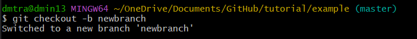
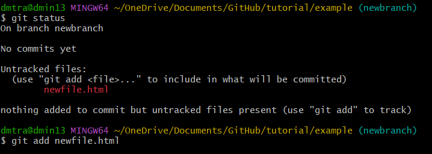
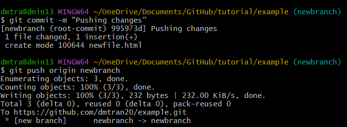
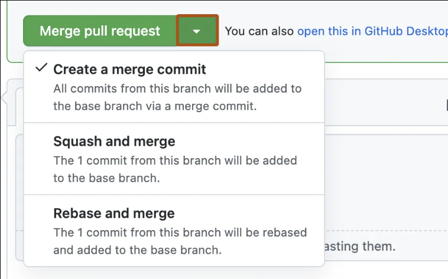

Welcome to a basic github tutorial
Download Links
Download GitThe Basics
Steps
- Make sure you make a branch first to protect the current GitHub content.
- git checkout -b branch

- git status
- git add [filename.extension]

- git commit -m "Add message"
-
git push origin [branch name]

- You have now successfully added content to your branch!
-
Open GitHub to merge branch as a Pull Request.

- All done. Now repeat the process!
Helping Commands
- Git status is your best friend! You can check which files Git is tracking by running git status command.
- Git reset allows you to revert git add commands.
Any Alternatives?
There are so many different ways to use Git and one recommendation is using GitHub Desktop for a modern user interface.